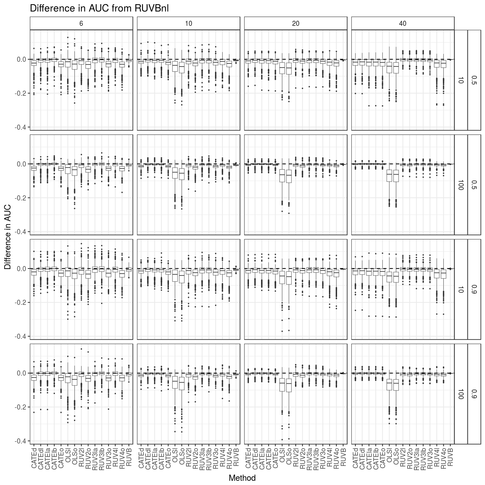

Here, I make some exploratory plots from the output of the RUVB paper simulations. I ultimately make a suggestion on AUC plots.
Here, I explore six mean methods:
I estimate the variances with the mean methods in different combinations. The key for this is:
The “c” and “m” variants of methods theoretically must have the same AUC as the original method. That is, the groups of methods that have the same AUC are:
It turns out that RUVBnl always has the highest (mean/median) AUC, particularly when there are only 10 control genes (as opposed to 100). The hard part will then be making a plot appropriate for the paper.
library(tidyverse)## Loading tidyverse: ggplot2
## Loading tidyverse: tibble
## Loading tidyverse: tidyr
## Loading tidyverse: readr
## Loading tidyverse: purrr
## Loading tidyverse: dplyr## Conflicts with tidy packages ----------------------------------------------## filter(): dplyr, stats
## lag(): dplyr, statslibrary(stringr)
aucdat <- read_csv(file = "../../reproduce_ruv3/Output/sims_out/auc_mat2.csv")## Parsed with column specification:
## cols(
## .default = col_double(),
## current_seed = col_integer(),
## Nsamp = col_integer(),
## ncontrols = col_integer(),
## poisthin = col_logical()
## )## See spec(...) for full column specifications.left_vals <- toupper(str_replace(str_extract(names(aucdat)[-(1:5)], "^.+_"), "_", ""))
right_vals <- str_replace(str_extract(names(aucdat)[-(1:5)], "_.+$"), "_", "")
name_vec <- c("Seed", "Pi0", "SampleSize", "NControls", "Poisthin",
paste0(left_vals, right_vals))
name_vec[(length(name_vec) - 2):length(name_vec)] <-
paste0("RUVB", stringr::str_replace(string = names(aucdat)[(length(name_vec) - 2):length(name_vec)],
pattern = "(ruvb)(.*+)", replace = "\\2"))
names(aucdat) <- name_vec
keep_vec <- c("Pi0", "SampleSize", "NControls", "OLSo", "OLSl", "RUV2o", "RUV2l",
"RUV3o", "RUV3la", "RUV3lb", "RUV4o", "RUV4l", "CATEo", "CATEd",
"CATEla", "CATElb", "CATEdl", "RUVB", "RUVBnl" )
ddat <- select_(aucdat, .dots = keep_vec)
diff_mat <- bind_cols(ddat[, 1:3], ddat[, -c(1:3)] - c(ddat$RUVBnl))
diff_mat <- select(diff_mat, -RUVBnl)
longdat <- gather(data = diff_mat, key = "Method", value = "AUC", -(1:3)) %>%
filter(Pi0 != 1)
p <- ggplot(data = longdat, mapping = aes(y = AUC, x = Method)) +
geom_boxplot(outlier.size = 0.2, size = 0.2) +
facet_grid(Pi0 + NControls ~ SampleSize) +
geom_hline(yintercept = 0, lty = 2) +
xlab("Method") + ylab("Difference in AUC") +
ylim(-0.2, max(longdat$AUC)) +
theme_bw() + theme(axis.text.x = element_text(angle = 90, hjust = 1, vjust = 0.5)) +
theme(strip.background = element_rect(fill="white")) +
ggtitle("Difference in AUC from RUVBnl")
print(p)## Warning: Removed 360 rows containing non-finite values (stat_boxplot).
The “non-finite” values just results because I put a minimum value of -0.2 on the y-limits.
I can simplify the above plot by just showing the median.
med_dat <- group_by(.data = longdat, Pi0, SampleSize, NControls, Method) %>%
summarise(Mean = mean(AUC), Median = median(AUC)) %>%
ungroup()
pl <- ggplot(data = filter(med_dat, Pi0 == 0.5),
mapping = aes(x = SampleSize, y = Mean, lty = Method, color = Method)) +
facet_grid(NControls ~.) +
geom_line() +
theme_bw() +
ggtitle("Mean AUC Diff for Pi0 = 0.5") +
geom_hline(yintercept = 0, lty = 2)
print(pl)pl <- ggplot(data = filter(med_dat, Pi0 == 0.5),
mapping = aes(x = SampleSize, y = Median, lty = Method, color = Method)) +
facet_grid(NControls ~.) +
geom_line() +
theme_bw() +
ggtitle("Median AUC Diff for Pi0 = 0.5") +
geom_hline(yintercept = 0, lty = 2)
print(pl)pl <- ggplot(data = filter(med_dat, Pi0 == 0.9),
mapping = aes(x = SampleSize, y = Mean, lty = Method, color = Method)) +
facet_grid(NControls ~.) +
geom_line() +
theme_bw() +
ggtitle("Mean AUC Diff for Pi0 = 0.9") +
geom_hline(yintercept = 0, lty = 2)
print(pl)pl <- ggplot(data = filter(med_dat, Pi0 == 0.9),
mapping = aes(x = SampleSize, y = Median, lty = Method, color = Method)) +
facet_grid(NControls ~.) +
geom_line() +
theme_bw() +
ggtitle("Median AUC Diff for Pi0 = 0.9") +
geom_hline(yintercept = 0, lty = 2)
print(pl)There isn’t really any difference between Pi0 = 0.5 and Pi0 = 0.9 and the mean and median seem to show the same story.
We can include the above boxplot in the supplementary material. But there are certainly methods that perform similarly. Specifically, these groups more or less behave similarly and we can probably only include the best performing method among these groups:
I will demonstrate the equivalence in behavior between those groups now.
The non-limma RUV4 methods have similar trends. Though it seems that CATEd works best and should be included of these.
dat <- filter(med_dat, Pi0 == 0.5, Method %in% c("CATEd", "CATEo", "RUV4o"))
pl <- ggplot(data = dat,
mapping = aes(x = SampleSize, y = Mean, lty = Method, color = Method)) +
facet_grid(NControls ~.) +
geom_line() +
theme_bw() +
ggtitle("Mean AUC Diff for CATEd, CATEo, and RUV4 when Pi0 = 0.5") +
geom_hline(yintercept = 0, lty = 2)
print(pl)The RUV4 Limma methods have similar trends. Again, we should probably include CATEdl among these.
dat <- filter(med_dat, Pi0 == 0.5, Method %in% c("CATEdl", "CATEla", "CATElb", "RUV4l"))
pl <- ggplot(data = dat,
mapping = aes(x = SampleSize, y = Mean, lty = Method, color = Method)) +
facet_grid(NControls ~.) +
geom_line() +
theme_bw() +
ggtitle("Mean AUC Diff for CATEdl, CATEla, CATElb, and RUV4l when Pi0 = 0.5") +
geom_hline(yintercept = 0, lty = 2)
print(pl)Note that it is always better to use GLS (CATE) rather than OLS (RUV4).
The OLS methods perform poorly, with OLSl performing slightly better.
dat <- filter(med_dat, Pi0 == 0.5, Method %in% c("OLSo", "OLSl"))
pl <- ggplot(data = dat,
mapping = aes(x = SampleSize, y = Mean, lty = Method, color = Method)) +
facet_grid(NControls ~.) +
geom_line() +
theme_bw() +
ggtitle("Mean AUC Diff for OLSo and OLSl when Pi0 = 0.5") +
geom_hline(yintercept = 0, lty = 2)
print(pl)The RUV2 methods. RUV2l works better.
dat <- filter(med_dat, Pi0 == 0.5, Method %in% c("RUV2o", "RUV2l"))
pl <- ggplot(data = dat,
mapping = aes(x = SampleSize, y = Mean, lty = Method, color = Method)) +
facet_grid(NControls ~.) +
geom_line() +
theme_bw() +
ggtitle("Mean AUC Diff for RUV2o and RUV2l when Pi0 = 0.5") +
geom_hline(yintercept = 0, lty = 2)
print(pl)The RUV3 methods. RUV3o seems to have a similar trend to the RUV2 methods. RUV3lb works slightly better than RUV3la and has relatively flat performance relative to RUVBnl.
dat <- filter(med_dat, Pi0 == 0.5, Method %in% c("RUV3o", "RUV3la", "RUV3lb"))
pl <- ggplot(data = dat,
mapping = aes(x = SampleSize, y = Mean, lty = Method, color = Method)) +
facet_grid(NControls ~.) +
geom_line() +
theme_bw() +
ggtitle("Mean AUC Diff for RUV3 methods when Pi0 = 0.5") +
geom_hline(yintercept = 0, lty = 2)
print(pl)The RUVB method works almost as well as RUVBnl, but is always lower.
dat <- filter(med_dat, Pi0 == 0.5, Method %in% c("RUVB"))
pl <- ggplot(data = dat,
mapping = aes(x = SampleSize, y = Mean, lty = Method, color = Method)) +
facet_grid(NControls ~.) +
geom_line() +
theme_bw() +
ggtitle("Mean AUC Diff for RUVB when Pi0 = 0.5") +
geom_hline(yintercept = 0, lty = 2)
print(pl)Paper plot: Mean AUC from a method subtracted from the mean AUC from RUVBnl. Anything below 0 (the dashed line) indicates superior performance of RUVBnl.
dat <- filter(med_dat, Pi0 == 0.5, Method %in% c("RUV2l", "RUV3lb", "CATEd", "CATEdl"))
pl <- ggplot(data = dat,
mapping = aes(x = SampleSize, y = Mean, lty = Method, color = Method)) +
facet_grid(NControls ~.) +
geom_line() +
theme_bw() +
geom_hline(yintercept = 0, lty = 2) +
theme(strip.background = element_rect(fill = "white")) +
ylab("Mean Difference from RUVBnl") +
xlab("Sample Size")
print(pl)sessionInfo()## R version 3.3.2 (2016-10-31)
## Platform: x86_64-pc-linux-gnu (64-bit)
## Running under: Ubuntu 16.04.2 LTS
##
## locale:
## [1] LC_CTYPE=en_US.UTF-8 LC_NUMERIC=C
## [3] LC_TIME=en_US.UTF-8 LC_COLLATE=en_US.UTF-8
## [5] LC_MONETARY=en_US.UTF-8 LC_MESSAGES=en_US.UTF-8
## [7] LC_PAPER=en_US.UTF-8 LC_NAME=C
## [9] LC_ADDRESS=C LC_TELEPHONE=C
## [11] LC_MEASUREMENT=en_US.UTF-8 LC_IDENTIFICATION=C
##
## attached base packages:
## [1] stats graphics grDevices utils datasets methods base
##
## other attached packages:
## [1] stringr_1.2.0 dplyr_0.5.0 purrr_0.2.2 readr_1.0.0
## [5] tidyr_0.6.1 tibble_1.2 ggplot2_2.2.1 tidyverse_1.1.1
##
## loaded via a namespace (and not attached):
## [1] Rcpp_0.12.10 plyr_1.8.4 forcats_0.2.0 tools_3.3.2
## [5] digest_0.6.12 jsonlite_1.3 lubridate_1.6.0 evaluate_0.10
## [9] nlme_3.1-131 gtable_0.2.0 lattice_0.20-34 psych_1.6.12
## [13] DBI_0.6 yaml_2.1.14 parallel_3.3.2 haven_1.0.0
## [17] xml2_1.1.1 httr_1.2.1 knitr_1.15.1 hms_0.3
## [21] rprojroot_1.2 grid_3.3.2 R6_2.2.0 readxl_0.1.1
## [25] foreign_0.8-67 rmarkdown_1.3 modelr_0.1.0 reshape2_1.4.2
## [29] magrittr_1.5 backports_1.0.5 scales_0.4.1 htmltools_0.3.5
## [33] rvest_0.3.2 assertthat_0.2.0 mnormt_1.5-5 colorspace_1.3-2
## [37] labeling_0.3 stringi_1.1.2 lazyeval_0.2.0 munsell_0.4.3
## [41] broom_0.4.2This site was created with R Markdown